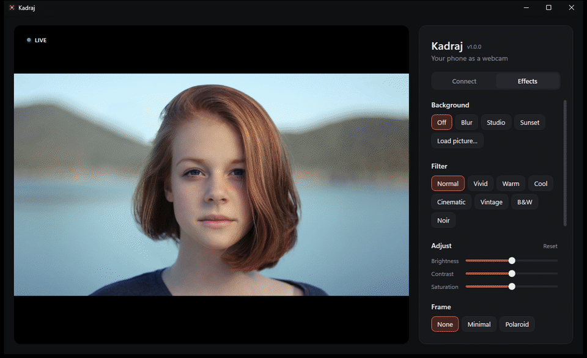
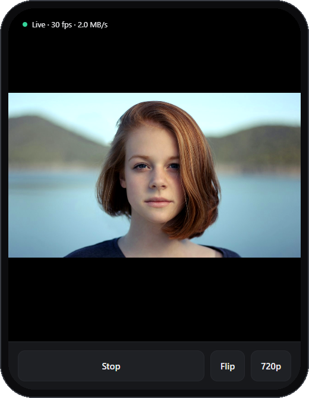
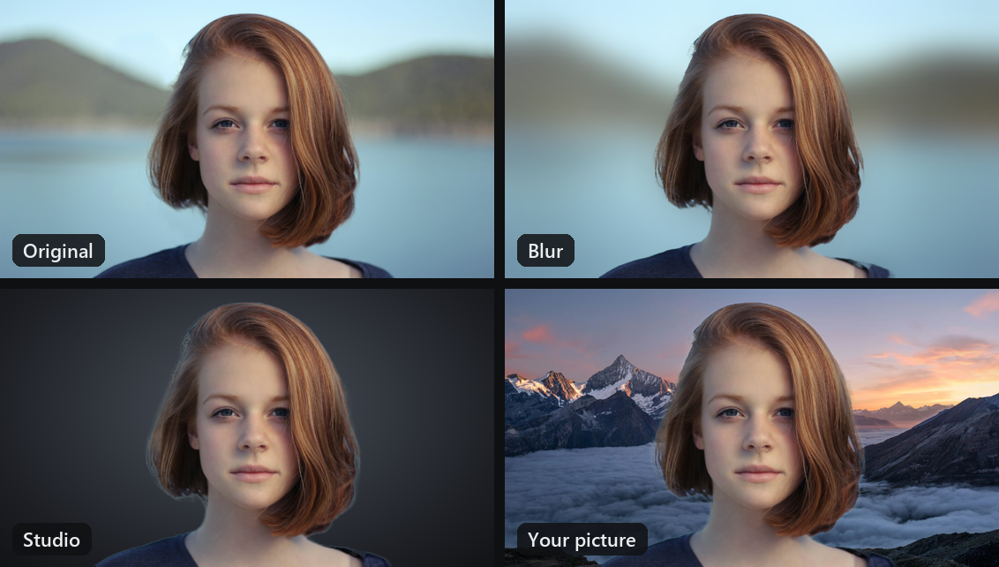
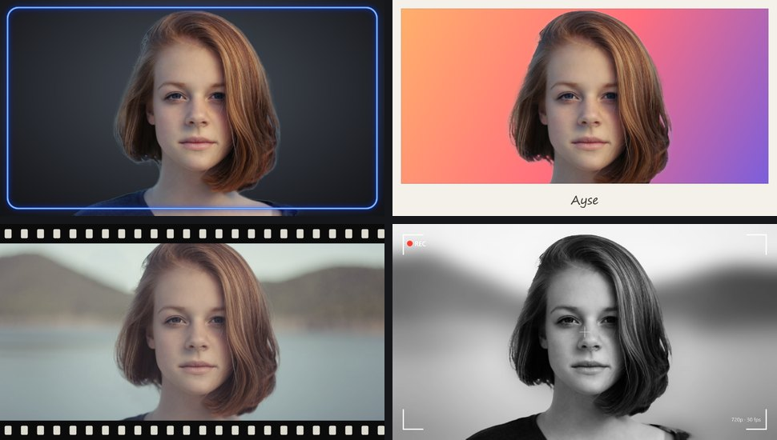
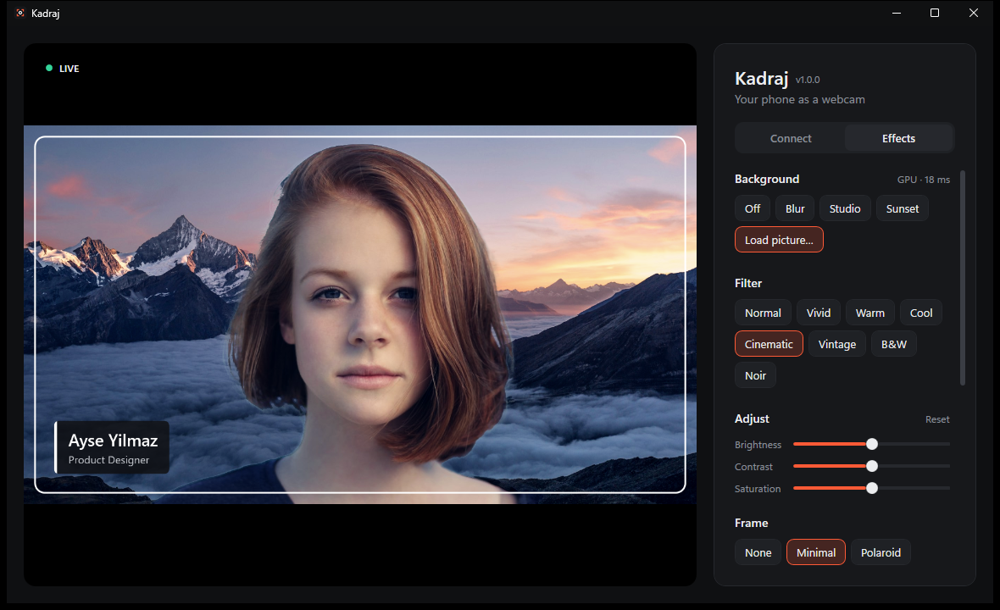
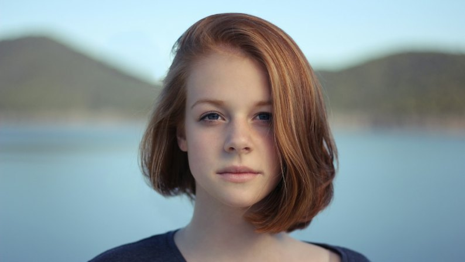
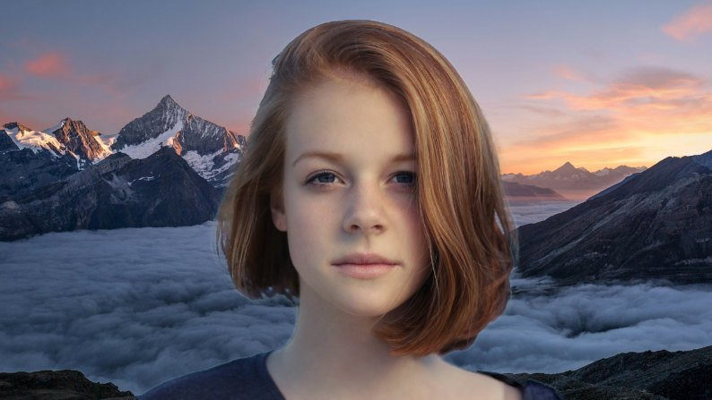

Kadraj turns your phone into your PC's camera, with AI background blur and replacement, filters, frames and a name tag. Nothing to install on the phone: scan a QR code and you're live.


Effects are applied before the picture reaches your meeting app, so they work everywhere, and the preview shows exactly what others see.
Blur the room, use the studio or sunset backdrop, or put any picture behind you. Robust Video Matting keeps headsets, hands and moving arms in the picture, without flicker.

The phone opens a page in its browser. Front or back camera, 720p or 1080p, flashlight, and the screen stays awake.
Eight colour looks with brightness, contrast and saturation. Frames in six colours, or load your own transparent PNG.

A clean lower-third with your name and title, the way TV does it. It sits above the frame and never gets mirrored.

per frame for background removal with DirectML, measured on the author's PC. Falls back to the CPU when there's no suitable graphics card.
No account, no cloud, no telemetry. Your video travels over your own Wi-Fi to your own PC, only from phones you paired with the QR code.


Your room KadrajExtract the zip and run Kadraj.exe. Nothing else to install.
Click “Install camera”. Windows asks for permission once, and “Kadraj” joins your camera list.
On the same Wi-Fi, scan the QR code with your phone and tap Start. Pick “Kadraj” in your meeting app.
The first time, the phone warns about the connection. That's expected: the address is your own PC. Choose Advanced → Continue; it asks only once.
Kadraj was built to be safe to leave running. The code is open for anyone to check.
A Windows 11 PC and a phone with a modern browser on the same Wi-Fi. A DirectX 12 graphics card makes the AI background faster, but it isn't required.
Kadraj isn't code-signed yet, so SmartScreen doesn't know it. Click More info → Run anyway. Each release has a SHA-256 checksum you can compare.
Click “Install camera” in Kadraj once, keep Kadraj open, then restart the meeting app so it looks for cameras again. The virtual camera needs Windows 11.
Both devices must be on the same Wi-Fi (guest networks often isolate devices), and Kadraj must be allowed in Windows Firewall. With a VPN or virtual machines, try the other addresses listed under the QR code.
Yes. Kadraj is open source under the GPL-3.0, with no ads, accounts or paid tiers. The AI background uses Robust Video Matting.
Free for Windows 11. Takes about a minute to set up.